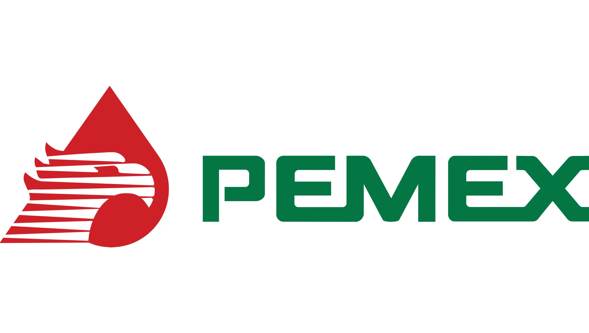
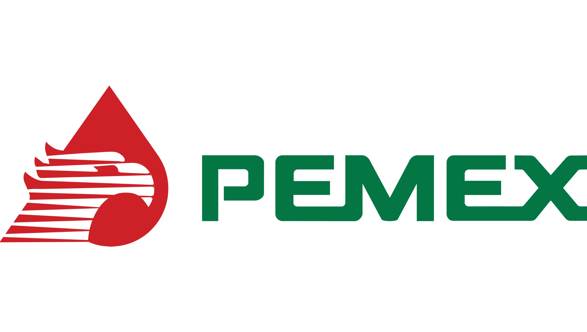

Metodologías
Combinamos enfoques probados para diseñar culturas más humanas y resultados sostenibles.
Liderazgo
El liderazgo no se impone.
Se construye en la calidad de tus conversaciones, en la coherencia de tus acuerdos y en la manera en que cuidas a tu gente mientras consiguen resultados.
Servicios
Codiseñamos experiencias amables y de alto impacto para tu organización.
Workshops
Sesiones vivenciales altamente productivas para desarrollar habilidades, alinear equipos, innovar y marcar la diferencia.
Radical Collaboration
Ya han sido 1, 2, 3 talleres de comunicación aserIva y manejo de conflictos… ¿las cosas siguen igual?
De Líder a Coach
Transición de liderazgo directivo a liderazgo que desarrolla talento y autonomía.
Team Coaching Estratégico
Alineación de objetivos, acuerdos y dinámicas de alto desempeño en equipo.
Design Thinking
Innovación centrada en personas para resolver retos complejos con rapidez.
Gestión Emocional
Herramientas para conversaciones difíciles, claridad mental y seguridad psicológica.
Conferencias
Charlas inspiradoras y accionables para líderes y equipos. Con contenido humano, claro y directo.
¡Si al aprecio!
Cómo crear cultura y resultados desde fortalezas, acuerdos y conversaciones efectivas.
Malas ideas para convivir mejor
Lo que suele romper la convivencia… y cómo transformarlo en acuerdos prácticos.
Mujeres: creadoras de cambio y belleza
Inspiración y enfoque para impulsar cambio con propósito e impacto.
6 palabras muy amables
Conexión humana como base de confianza, colaboración y liderazgo.
Estar mal me sale bien
Resiliencia emocional aplicada: convertir crisis en claridad y movimiento.
Bienestar
Sesiones vivenciales que brindan herramientas para el bienestar personal.
Micro talleres de bienestar personal
Herramientas breves y prácticas para energía, enfoque y equilibrio emocional.
Protagonista de mi felicidad
Hábitos y acuerdos personales para construir espacios psicológicamente seguros.
Abrazando mis emociones
IdenIficar, nombrar y aprender a regular las emociones para mantener mayor claridad y vivir mejor.
Escuchando a mi cuerpo
Conectar con sensaciones y señales asicas para reducir estrés y aumentar bienestar.
Del dolor a la gratitud
Resignificar experiencias de pérdida para expandir posibilidades fortaleciendo la mente, cuerpo y salud emocional.
Mi marca personal
Elevar la autoridad interna, motivación y deseos de manera consciente y entusiasta.
Eventos destacados
Programas con impacto cultural y resultados medibles.
Colaboración Radical
Talleres vivenciales para alta dirección, gerencias y mandos medios para crear ambientes colaborativos (zona verde), impactar KPI’s del negocio y lograr negociaciones exitosas.
Viviendo nuestra cultura GPTW
Programa que implicó innovar las competencias del Culture Audit y mejorar el ranking en Great Place to Work; a través de técnicas de team coaching y design thinking.
Innovación en experiencia de colaboradores y clientes
Programa de cambio en cultura y comportamiento de líderes para crear experiencias excepcionales dirigidas a colaboradores y clientes.
Clientes
Marcas que confían en Xpanss.
 

Lo que dicen
“Xpanss entendió el objetivo desde el día uno. Entregaron rápido, con claridad y obsesión por el detalle.”
“Logramos acuerdos reales entre áreas en semanas. El enfoque humano y estratégico se notó desde la primera sesión.”
“El taller fue práctico, medible y muy bien facilitado. Se siente cultura, no solo teoría.”
“Nos ayudó a convertir fricción en colaboración. La claridad de los acuerdos cambió la dinámica del equipo.”